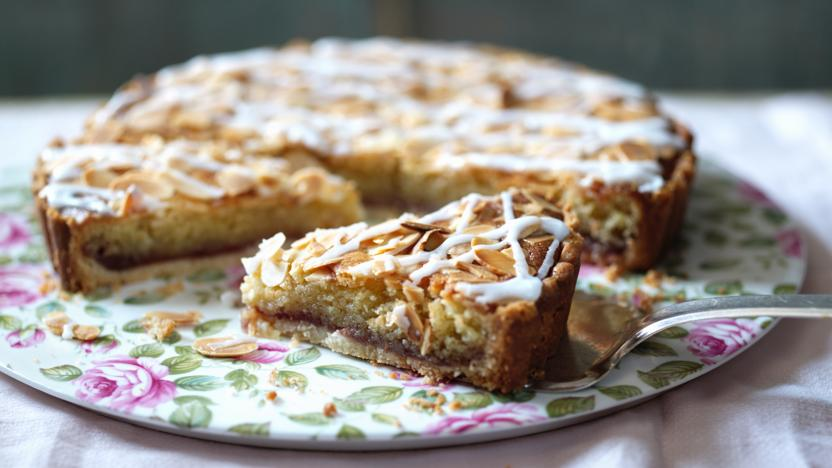

Mary Berry's bakewell tart
Serves 8, prep time 30 mins, cooking time 30 mins to 1 hour

Ingredients
- shortcrust pastry
- 1 tbsp raspberry jam
- butter
- caster sugar
- ground almonds and almond extract
- 1 egg
Method
- Line the pastry case with kitchen foil and fill with baking beans. Bake blind for about 15 minutes, then remove the beans and foil and cook for a further 5 minutes to dry out the base.
- For the filing, spread the base of the flan generously with raspberry jam.
- Melt the butter in a pan, take off the heat and then stir in the sugar. Add ground almonds, egg and almond extract. Pour into the flan tin and sprinkle over the flaked almonds.
- Bake for about 35 minutes. If the almonds seem to be browning too quickly, cover the tart loosely with foil to prevent them burning.
- Meanwhile, sift the icing sugar into a bowl. Stir in 2½ teaspoons cold water and transfer to a piping bag.
- Once you have removed the tart from the oven, pipe or drizzle the icing over the top, giving an informal zig zag effect.